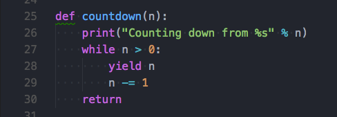

聊聊Python中晦涩的生成器（yield）与生成器表达式
作者:J.sky 发布时间:2017-10-14 08:21:49 Tag: Python基础

晦涩的生成器yield
刚开始接触Python的时候感觉很清爽，入门很简单，但后边学到生成器和协程的时候就感觉有些吃力了，是时候深入的学习一下了。
什么是生成器？
书上说：函数使用yield可以定义生成器对象，那么包含yield的函数主是一个生成器函数，它可以生成一个序列，方便迭代中使用，__next__()#python3中的特殊方法，应该避免使用特殊方法，next(c)使用内置函数next()即可。
def countdown(n):
print("Counting down from %s" % n)
while n > 0:
yield n
n -= 1
return
c = countdown(10)
print(c.__next__())#python3中的特殊方法，应该避免使用特殊方法
print(next(c))#使用内置函数next()
for i in c :
print(i,end=' ')
函数对象调用.__next__()函数时开始执行语句，遇到yield语句时停止。可以使用循环来操作生成器。
调用close()方法关闭未使用完的生成器。
那么问题来了，yield到底是什么？
我们把上边的代码稍加变化:
def countdown1(n):
print("Counting down from %s" % n)
while n > 0:
yield n*n
n -= 1
return
c = countdown1(10)
print(next(c))
print(next(c))
print(next(c))
for i in c :
print(i,end=' ')
运行之后我们可以发现程序运行到yield的时候返回了一个值，那么yield和return在功能上有些相似。
生成器表达式
如果你对列表推导有些了解，你会发现，生成器表达式只不过是把列表的[]换成了元组的()，但列表推导返回的是一个结果集，而生成器表达式返回的是一个生成器。 因为这个特点，我们可以通过流方式访问一个巨大的文件而不必把它直接加载到内存，这样很大的提高了程序的性能。
代码如下：
print('')
print("生成器表达式:")
b = (x*x for x in range(10) if (x % 2 ==0))
print(next(b))
print(next(b))
for i in b :
print(i, end=' ')